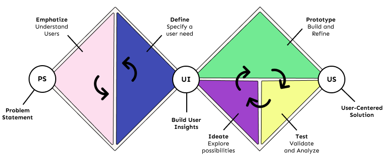
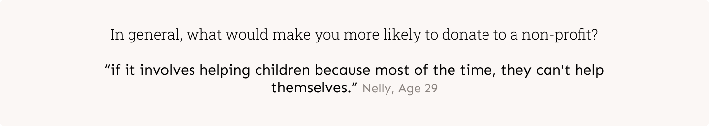
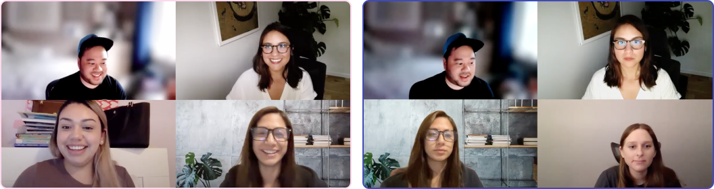
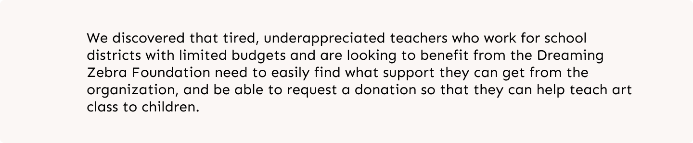
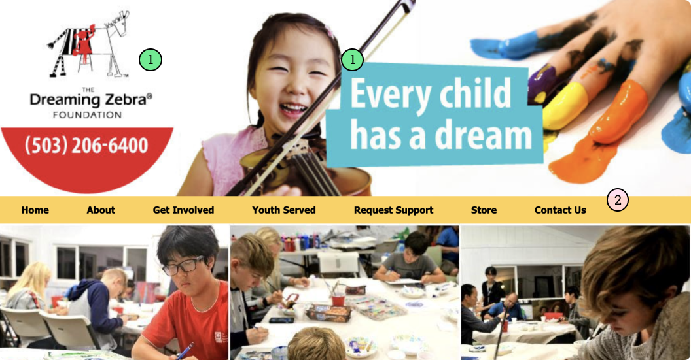
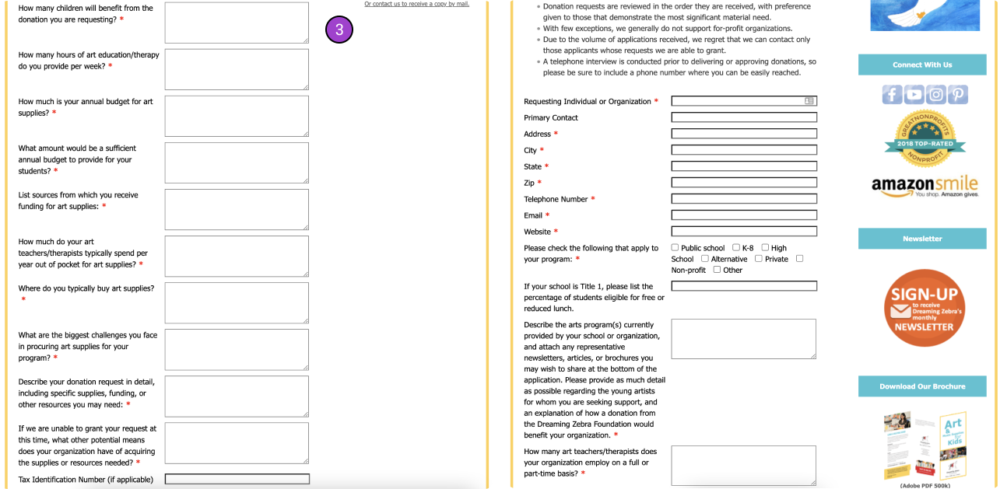
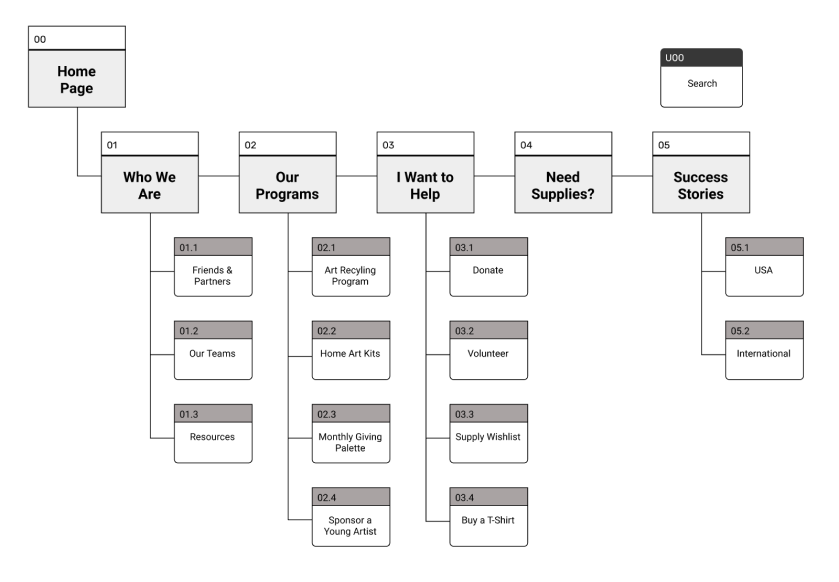
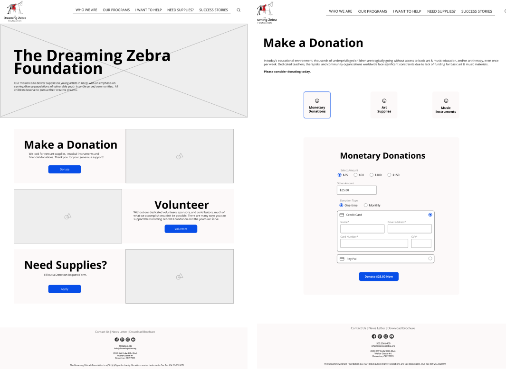
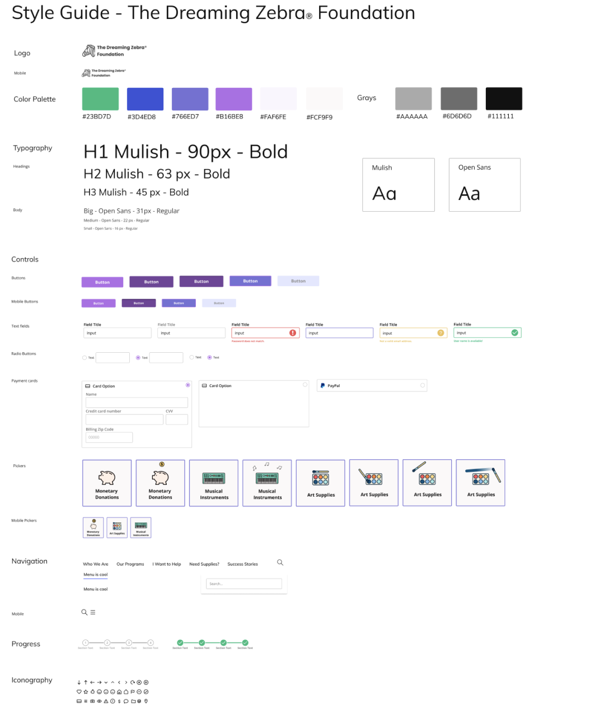
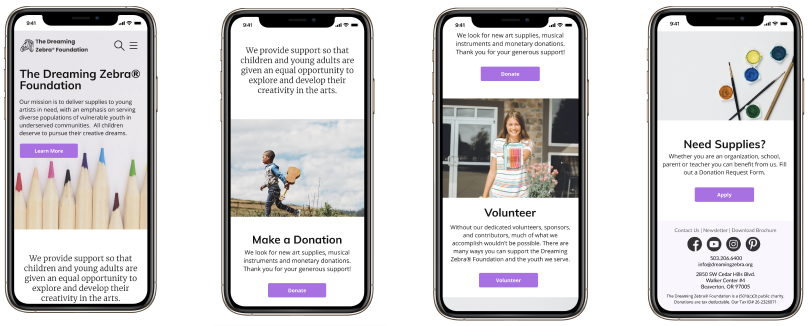

- Our Client
The Dreaming Zebra® Foundation is a non-profit organization that makes it simple for underprivileged children and young adults to follow their artistic dreams by supporting them with art supplies and musical instruments.
- My Responsibilities:
- Research Coordination, Visual Design & Prototype Developement.
- UX Techniques:
- User Interviews, Surveys, User Persona, Heuristic Evaluation, Site Map, Sketching, Wireframing & Usability Testing.
- Tools:
- Figma
- Durantion
- 3 weeks
- Team:
- Daniel Tran (Product Design & Prototype) & Lily Vargas (UX Writer).
- The Challenge - Bringing back the light in three weeks
The Dreaming Zebra® Foundation needed to redesign their now 11-year-old website and, we had the opportunity to be part of this fun challenge. Besides needing an aesthetic redesign, the information architecture had no structure and just one way to get to pages from the navigation menu. Both a poor design and no organization resulted in users abandoning their site after not finding the organization's mission, how to contribute to it, or how to request donations. We had three weeks to fix this and help children get access to art and music supplies.
- The Process
We followed the Double Diamond design model; we adopted it as our working agreement and, it was the foundation to make sure we were solving a problem for a user.
Our mantras: “Research, Analyze, Synthesize” and “Prototype, Test, Refine.”

- User Research & Findings
It was not an easy task to find people that contribute to non-profit organizations and beneficiaries of the Dreaming Zebra Foundation that were open for interviews and initial guerrilla tests on the old website. By reaching out to friends, and using social media we were able to find six users for our study.
We conducted five usability tests to understand both qualitative and quantitative data. We selected testers that either work for nonprofits, get benefited from nonprofits or, donate to nonprofits.


Figure 1.0 - User Interviews
Survey Results

We discovered that people prefer signing up for volunteering opportunities online. None of our participants choose the phone as a preferred method to sign up.
The Dreaming Zebra’s foundation website hierarchy had the phone number very visible on their hero banner. We later found out that people were not calling directly to be beneficiaries either. They just sign up online as well.
We ended up removing the phone from the header section as part of our final prototype.
80% of the people who continuously donate to non-profit organizations are busy with their families and work and prefer to contribute with money.
After art materials, monetary donations are the most common contribution to The Dreaming Zebra Foundation.
The Monetary donation option is the first selector from left to right users to pick on our final prototype. While it is not the most accessible option when using the mobile version, it is the option they see first.
- Analysis - Problem Statement
Through our user research and survey results we...

- Analysis - User Persona
With our research findings and problem statement in mind, we developed a persona that would take into account the goals and pain points of someone contributing and donating to the non-profit, and also someone who can benefit from it.
User scenario 1: Jenny is a kindergarten teacher who wants to get art supplies for her kindergartners.
User scenario 2: Jenny also wants to donate any unused supplies at the end of the school year.
 Figure 1.2 - User Persona
Figure 1.2 - User Persona
- Analysis - Heuristic Evaluation
1. Unclear information hierarchy - As we mentioned before, even the phone number caughts the eye before finding a call to action to donate, contribute or volunteer options. Or even finding out what is the organization’s mission. Similar situation wht the “Every child has a dream” quote.
2. We noted the lack of search function.

Figure 1.3 - Home page hero banners
3. Forms were long and had too many open questions. Note: During user testing, users prefered not to fill all the form out and just go to another option or organization.

Figure 1.4 - Two fragments of the request donations form
- Site Map
The new Site Map was a product of a Card Sorting exercise. We focused on finding a better grouping for all the pages and better labeling. We also added a search utility.

Figure 1.5 - Site Map
- Low Fidelity Prototype
With our persona's goals and pain points in mind, along with insights gained from the heuristic analysis and reorganization of the information architecture, we designed a lo-fi prototype of a desktop version.

Figure 1.6 - Home Page & Monetary Donation option

- Style Guide
After feeling confident with our lo-fidelity prototype, we started looking into colors; we wanted something colorful that, at the same time, was not too overwhelming and could create a nice balance and delightful experience for our users.
The style guide was created before the high fidelity prototype was created. We focused on creating figma components. We wanted to take an atomic design approach with developing our components first so we could easily scale design system between desktop and mobile versions.

Figure 1.7 - Style Guide
- High Fidelity Prototype - Home Page
The home page! We wanted to make sure Jenny could easily understand that the organization is involved with helping children get access to art and music supplies. We wanted her to have easy access to learn more about the organization.
Main changes:
- It included three quick ways to get to Donate, Volunteer, and Request Supplies forms.
- Hierarchy changes that make it clean and easy to follow.
- Global search option.
- Logo simplification with no phone and modern design.
- Combination of subdle purple and pink colors to represent care and magic.
 Figure 1.8 - Home Page
Figure 1.8 - Home Page
- High Fidelity Prototype - Make a Donation Page
The main donation page has three accessible pickers depending on what you want to contribute. We had the Monetary Donation be first since its the most common. Additionally, these three pickers have a micro animation to keep the users engaged. Users found it very easy to fill out these forms.
 Figure 1.9 - Make a Donation Page
Figure 1.9 - Make a Donation Page
- High Fidelity Prototype - Need Supplies? Page
We wanted to ensure that the request to be a beneficiary had a progress bar to indicate the users where they were in the process. We also added the option to upload files if they did not feel like typing information about their school or program. These two main functionalities allowed the user to have a better experience and a smoother process to request supplies.
 Figure 1.10 - Request Supplies Form
Figure 1.10 - Request Supplies Form
- Mobile Prototype

Figure 1.11 - Mobile Prototype
- Next Steps
Three weeks were enough to get a solid start. Our last round of testing threw more ideas and feedback. We will do a second iteration of this design and fix areas of the website that we did not have time to research on. /db>
- As a contributor, I want to know what is The Dreaming Zebra Foundation doing with my donations so that I can feel connected to the cause and keep helping out.
- As a beneficiary, I want to have a faster way to request support again without having to go through a 4 step form so that I can use my time teaching class instead of filling out a form.
Just like any product it has to be revisited and we have keep observing the users and the world to make their lives better.
This research was a team project assigned as part of a UI/UX Bootcamp at the University of Oregon.